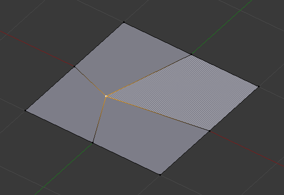
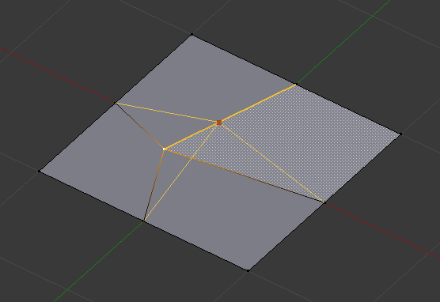
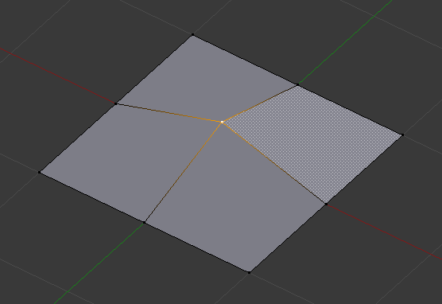

顶点工具¶
参考
Ctrl-V本页覆盖了 菜单下的许多工具。这些工具主要用于处理选中的顶点，其中一些也适用于选中的边或面。
合并¶
合并顶点¶
参考
Alt-M该工具用于将选中顶点合并为一个顶点，融并其余顶点。用户可以在弹出的菜单中选择最后剩下来的那个顶点的位置:
- 到首选点
- 仅适用于 顶点 选择模式，将合并后的顶点置于第一个选中点的位置。
- 到末选点
- 仅适用于 顶点 选择模式，将合并后的顶点置于最后一个选中点(活动顶点)的位置。
- 到中心
- 适用于所有选择模式，将合并后的顶点置于所有选中项的中心。
- 到光标
- 适用于所有选择模式，将合并后的顶点置于光标位置。
- 塌陷
- 各组选中顶点的组成孤岛(以选中的边相连)分别合并至其自身质心点，每个孤岛合并为一个顶点。还可以从 菜单访问。
合并顶点明显会删除一些边和面。但是Blender会尽力保留边和面，仅对部分边和面进行合并操作。
Note
首选点 和 末选点 是基于Blender记录的选择顺序的，但是有时候，比如改变选择模式后，该顺序会丢失。
- UV
- 如果勾选操作面板的 UV 选项，会自动矫正现有UV映射坐标，避免图像畸变。
自动合并编辑¶
参考
网格 菜单有一个开关选项： 自动合并编辑。启用后，只要将一个顶点向另一个顶点靠近至小于设定 范围 ()，会自动合并这两个顶点。该选项仅影响交互操作(操作面板中的调整也被认定为交互操作)。如果顶点移向的位置存在多个顶点，只会与其中一个顶点执行合并操作。
分离¶
{kind=link}
{kind=link}
{kind=link}
{kind=link}
{kind=link}
{kind=link}
{kind=link}
拆分¶
参考
Y将选中项与其他网格拆分(断开)。会对边界线的未选中元素进行复制。
要注意的是“复制元素”仍位于原来的位置，所以需要使用 G 移动后才能看的比较清楚...
扩展顶点¶
参考
Alt-D接受任意数量的选中点，并沿着最靠近鼠标的边拖动复制。当时扩展一条循环边时，会在循环的端点进行扩展。这与 挤出 工具类似，不过创建的是多边形。
可以很方便地对现有边增加细节。
滑动¶
参考
Shift-V顶点滑动用于沿着顶点的一个相邻边移动顶点。使用 Shift-V 调用工具。移动鼠标至移动方向所在边，会高亮显示。然后沿着边线移动鼠标指定目标位置， LMB 确认结果。
- 均匀
E - ToDo.
- 翻转
F - ToDo.
- 限定
Alt或C - 切换是否将滑动限制在边长范围内。

选中顶点。 |

交互定位顶点。 |

重新定位顶点。 |
{kind=link}
{kind=link}
{kind=link}
凸壳¶
参考
凸壳接受点云作为输入，输出围住这些顶点的凸壳。如果输入包含位于凸壳上的边或面，这些边或面也会作为输出。该操作还可以当做桥接工具使用。
- 删除未使用项
- 删除选中的但未在凸壳中用到的顶点、边和面。注意，非选中项中的边和面包含的顶点和边不会被删除。
- 使用已有的面
- 在可能的情况下，使用位于凸壳上的现有输入面。这样可以使输出结果包含多边形而非三角面(或四边面，如果勾选 合并三角面 选项的话)
- 生成空洞
- 删除位于凸壳上的输入边和面。可用于删除现有网格和凸壳两端的面，做到类似桥接的效果。
- 合并三角面
- 合并相邻三角面为四边面。与 三角面 --> 四边面 操作属性相同(角度限制、比较UV等)。
- 面夹角最大值
- ToDo.
- 最大形状角度
- ToDo.
挂钩¶
参考
Ctrl-H为选中项添加一个 钩挂修改器 (使用新建的空物体，或当前的选中物体)。要注意的是，尽管可以在历史菜单中找到该命令，但是在 编辑模式 下是无法取消该操作的 -- 因为有其他物体的参与。
如果当前物体没有关联挂钩，子菜单仅显示前两个菜单选项。
- 钩挂到一个新物体
- 为活动物体新建一个钩挂修改器，并指定至选择的顶点；同时在这些顶点的中心添加一个空物体，作钩挂之用。
- 钩挂到选中物体
- 与 钩挂到一个新物体 相同，不同的是钩挂到选中物体(如果存在的话)，而不是新建用于钩挂的空物体。这时(除在编辑中的网格外)只能有一个选中物体。
- 钩挂到选中的物体骨骼
- 与 钩挂到一个新物体 相同，不同的是将选中的骨架中最后选中的骨骼作为钩挂目标。
- 指定到挂钩
- 将选中的顶点指定至选中的挂钩。子菜单会显示与该物体关联的挂钩列表。挂钩中所有未被选中的顶点(如果已指定至该挂钩的话)都会被移除。一个顶点可以指定至多个挂钩。
- 移除挂钩
- 从物体中移除选定的(子菜单列表中)挂钩：从修改器堆中移除对应钩挂修改器。
- 选择挂钩
- 选择所有指定至(挂钩列表中)选定挂钩的顶点。
- 重置挂钩
- 等同于对应(钩挂列表中)钩挂修改器的 重置 按钮。
- 居中挂钩
- 等同于对应(钩挂列表中)钩挂修改器的 重新指定中心 按钮。